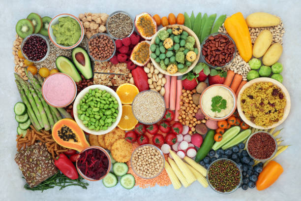

나는 비거니즘을 지향하고 있다. 비건은 패션, 뷰티, 식생활 등 여러 분야에서 동물 착취를 지양하고자 펼치는 소비 운동이다. 나는 그중 실천이 가장 쉽고 직관적인 동물이 들어간 음식은 먹지 않는 채식을 실천 중이다.
그런데 요새 몇 가지 문제점이 드러나고 있다. 나는 초콜릿과 과자를 사랑하는 사람이었다. 그런데 모두가 알다시피 웬만한 초콜릿과 과자에는 우유가 들어 있다. 아니, 소젖이 들어 있다. 몸을 움직이지 못하는 철기둥에 갇혀 제대로 된 저항 한 번 못하고 고통을 참아야만 하는 젖소의 울부짖음을 기억하라. 그깟 학습된 식욕이 무엇인가, 갑자기 온몸을 휘감던 식욕이 사라진다.